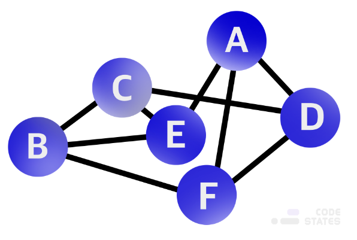

그래프는 여러 개의 점들이 서로 복잡하게 연결되어 있는 관계를 표현한 자료구조이다.
직접적인 관계가 있는 경우 두 점 사이를 이어주는 선이 있으며 간접적인 관계라면 몇 개의 점과 선에 걸쳐 이어진다.
하나의 점을 그래프에서는 정점(vertex)이라고 표현하고 하나의 선은 간선(edge) 이라고 한다.

두 정점 간에 간선이 직접 이어져 있다면 이 두 정점은 인접(adjacency)한 정점이며 인접 정점(adjacent vertex)이라고 한다.
진입차수(in-degree)와 진출차수(out-degree)는 한 정점에 진입(들어오는 간선)하고 진출(나가는 간선)하는 간선이 몇 개인지를 나타낸다.
정점에서 진출하는 간선이 곧바로 자기 자신에게 진입하는 경우를 자기 루프(self loop)를 가졌다 라고 표현한다.
자기 루프는 다른 정점을 거치지 않는다는 것이 특징이다.
한 정점에서 출발하여 다시 해당 정점으로 돌아갈 수 있다면 사이클(cycle)이 있다고 표현한다.
그래프의 종류에는 비가중치 그래프, 가중치 그래프, 무(방)향 그래프, 유(방)향 그래프가 있다.
비가중치 그래프(Unweighted Graph)는 간선이 이어져 있다는 사실만 알려줄 뿐 추가적인 정보를 파악할 수 없는 그래프이다.
가중치 그래프(Weighted Graph)는 비가중치 그래프와 다르게 추가적인 정보를 가지고 있는 그래프이다.
무(방)향 그래프(Undirected Graph)는 두 정점을 연결하는 간선의 방향이 없는 그래프이다.
간선은 양방향 관계를 나타내며 각 간선은 양방향으로 진행할 수 있다.
유(방)향 그래프(Directed Graph)는 두 정점을 연결하는 간선의 방향이 있는 그래프이다.
간선은 단방향 관계를 나타내며 각 간선은 한 방향으로만 진행할 수 있다.
그래프의 표현 방식으로는 인접 행렬과 인접 리스트가 있다.
인접 행렬은 서로 다른 정점들이 인접한 상태인지를 표시한 행렬로 2차원 배열의 형태로 나타낸다.
정점이 이어져 있다면 1(true), 이어져 있지 않다면 0(false)으로 표시한 일종의 표이다.
만약 가중치 그래프라면 1 대신 관계에서 의미 있는 값을 저장한다.
인접 행렬은 두 정점 사이에 관계가 있는지 없는지 확인하기에 용이하다.
인접 리스트는 각 정점이 어떤 정점과 인접하는지를 리스트의 형태로 표현한다.
각 정점마다 하나의 리스트를 가지고 있으며 이 리스트는 자신과 인접한 다른 정점을 담고 있다.
메모리를 효율적으로 사용하고 싶을 때 인접 리스트를 사용한다.